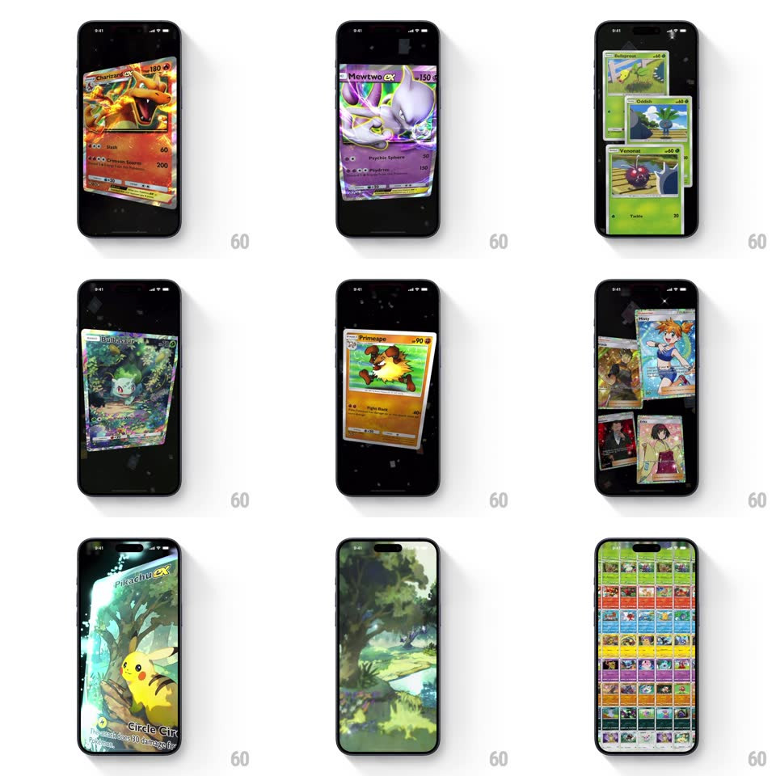

Media
Frame-by-frame

Rebuild this interaction 1:1: Pokemon TCG Pocket's intro - on a dark starfield, a card back flips to reveal Pikachu ex, more cards fly in and stack edge-on, fan out showing their art, then the camera dives inside a card's artwork (Moltres over a burning sky, Pikachu in a forest) before pulling back to the full collection grid.

Rebuild this interaction 1:1: Pokemon TCG Pocket's intro - on a dark starfield, a card back flips to reveal Pikachu ex, more cards fly in and stack edge-on, fan out showing their art, then the camera dives inside a card's artwork (Moltres over a burning sky, Pikachu in a forest) before pulling back to the full collection grid. ## Integration Integration: stack-agnostic spec - springs given as stiffness/damping, timed motions as duration + curve; map every value to your framework and animation library of choice. ## Scene A black starfield (drifting bokeh dust). Cards appear as full 3D objects: the classic blue card back, Pikachu ex, Venonat and Charmander full-arts, trainer cards, Moltres ex. The sequence ends on the dense card-dex grid filling the screen. ## Motion spec Pattern: cinematic card choreography with camera moves. - A lone card back floats center, slowly rotating; it flips (rotateY 180 -> 0, 600ms, ease-in-out) to reveal Pikachu ex as a sparkle burst plays across the art. - More cards fly in from off-screen edges (arcs with rotation, staggered 150ms) and gather into an edge-on deck - the camera orbits to show the stack's thickness. - The deck fans out (cards spread on arcs, 500ms, ease-out) showing different arts, each with its own holo shimmer. - The camera dives toward one card: the card frame dissolves and the artwork expands to full-bleed (FOV push-in, 700ms, ease-in) - you are inside the illustration with layered parallax (foreground Pikachu, mid trees, far sky drifting at different rates). - Pull back: the artwork shrinks into its cell as the whole collection grid assembles around it (cells fade/scale in outward from the dive point, 600ms). ## Calibration - The sequence is one continuous camera journey (~6-8s) - no cuts. - Cards keep subtle float motion whenever on screen - nothing is ever fully static. ## Reduced motion Sequence plays as simple crossfades between key tableaux. ## Don't miss - The starfield dust drifts throughout, including during the dive - it is the scene's connective tissue. - Inside the artwork, the layers move with a slight gyro-style sway even after the camera stops.